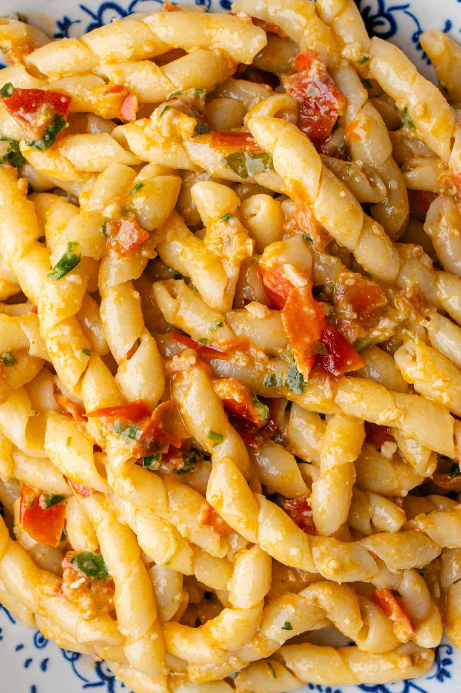

Pasta alla Trapanese (Sicilian Tomato Pesto)

Pasta
Ingredients to make Pesto alla Trapanese
- Fresh Tomatoes
- Fresh Basil
- Nuts
- Garlic
- Extra virgin olive oil
- Cheese
- Red pepper flakes
Make Sicilian Pesto
- In a mortar and pestle, add the nuts and garlic and crush to into tiny pieces
- Then add the basil leaves and crush into small pieces
- Cut the grape tomatoes into quarters and add to the mortar and pestle and crush into small pieces
- Add the olive oil, red pepper, salt and pepper and mix together well to create a rustic pesto sauce consistency
Cook Pasta
- Add cooked pasta to a large bowl with the pesto and a splash of pasta water
- Mix well so it's nicely coated. To serve, top with pangrattato and pecorino cheese or parmesan cheese and enjoy!
Tips and Tricks
- Traditionally a mortar and pestle is used for a rustic chunky Trapanese pesto. It’s best to follow the order of when the ingredients are added to make the blending easier
- You can however use a small food processor or blender but ensure not to over blend the pesto and only pulse it so you still have a rustic texture. *Note the blender will create more of a thin watery consistency due to the tomato juices
- Use good quality fresh ingredients for the best flavor. As there are only a few ingredients in this pesto sauce, trust me it makes a huge difference
- Don't add the pesto to the hot pan! It’s supposed to be served fresh for the best flavor
- Keep some of the pasta cooking water and add a splash if needed, when the pesto is added to the cooked pasta